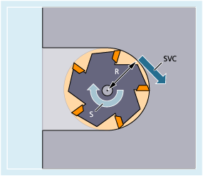

As an alternative to the spindle speed S, the tool cutting speed SVC, which is more commonly used in practice, can be programmed for milling operations.
The control uses radius R of the active tool to calculate the effective spindle speed from the programmed tool cutting speed:
with: | S | = spindle speed in r/min |
SVC | = tool cutting speed in m/min or ft/min | |
R | = radius of the active tool in mm |
The tool type ($TC_DP1) of the active tool is not taken into account.
The programmed tool cutting speed is independent of path feedrate F and G function group 15 (feedrate type). The direction of rotation and the spindle start are implemented via M3 and M4, and the spindle stop via M5.
A change to the tool radius data in the offset memory will be applied the next time a tool offset is selected or the next time the active offset data is updated.
Changing the tool or selecting/deselecting a tool offset data set generates a recalculation of the effective spindle speed.
Programming of the tool cutting speed requires:
The geometric ratios of a rotating tool (milling cutter or drilling tool)
An active tool offset data set
| T... D... SVC[<n>]=<Value> | |
| ... | |
| S... M3/M4 |
| Keyword for programming of the tool cutting speed | |
Unit: | r/min | |
| Number of spindle This address extension specifies which spindle the programmed cutting speed is to be applied for. In the absence of an address extension, the rate is always applied to the master spindle. Note: Note: | |
| Value of tool cutting speed | |
Unit: | m/min (for G71/G710) or ft/min (for G70/G700) | |
| The tool radius must be established in the block with SVC. Thus, a corresponding tool including tool offset data block must either be active or selected in the block. There is no fixed sequence for SVC and T/D selection during programming in the same block. | |
| Programming of the spindle speed will effect deselection of the tool cutting speed. Note: | |
| Note |
SVC programming is not possible if the following spindle feedrate movements are active: Conversely, programming one of these functions will effect a deselection of SVC (tool cutting speed). |
| Note |
Maximum tool speedSystem variable $TC_TP_MAX_VELO[<tool number>] can be used to preset a maximum tool speed (spindle speed). |
| Note |
The tool paths of "standard tools" generated, e.g. using CAD systems which already take the tool radius into account and only contain the deviation from the standard tool in the tool nose radius, are not supported in conjunction with SVC programming. |
The following shall apply to all examples: Tool carrier = spindle (for standard milling)
| Program code | Comment |
|---|---|
| N10 G0 X10 T1 D1 | ; Selection of milling tool with, e.g. $TC_DP6[1,1] = 6 (tool radius = 6 mm) |
| N20 SVC=100 M3 | ; Cutting speed = 100 m/min⇒ Resulting spindle speed:S = (100 m/min * 1000) / (6.0 mm * 2 * 3.14) = 2653.93 rpm |
| N30 G1 X50 G95 FZ=0.03 | ; SVC and tooth feedrate |
| ... |
| Program code | Comment |
|---|---|
| N10 G0 X20 | |
| N20 T1 D1 SVC=100 | ; Tool and offset data set selection together with SVC in block (no specific sequence). |
| N30 X30 M3 | ; Spindle start with CW direction of rotation, cutting speed 100 m/min |
| N40 G1 X20 F0.3 G95 | ; SVC and revolutional feedrate |
| Program code | Comment |
|---|---|
| N10 SVC[3]=100 M6 T1 D1 | |
| N20 SVC[5]=200 | ; The tool radius of the active tool offset is the same for both spindles. The effective speed is different for spindle 3 and spindle 5. |
Assumptions:
Master or tool change is determined by the tool carrier:
MD20124 $MC_TOOL_MANAGEMENT_TOOL CARRIER > 1
In the event of a tool change the old tool offset is retained. A tool offset for the new tool is only activated when D is programmed:
MD20270 $MC_CUTTING_EDGE_DEFAULT = - 2
| Program code | Comment |
|---|---|
| N10 $TC_MPP1[9998,1]=2 | ; Magazine location is tool carrier |
| N11 $TC_MPP5[9998,1]=1 | ; Magazine location is tool carrier 1 |
| N12 $TC_MPP_SP[9998,1]=3 | ; Tool carrier 1 is assigned to spindle 3 |
| N20 $TC_MPP1[9998,2]=2 | ; Magazine location is tool carrier |
| N21 $TC_MPP5[9998,2]=4 | ; Magazine location is tool carrier 4 |
| N22 $TC_MPP_SP[9998,2]=6 | ; Tool carrier 4 is assigned to spindle 6 |
| N30 $TC_TP2[2]="WZ2" | |
| N31 $TC_DP6[2,1]=5.0 | ; Radius = 5.0 mm of T2, offset D1 |
| N40 $TC_TP2[8]="WZ8" | |
| N41 $TC_DP6[8,1]=9.0 | ; Radius = 9.0 mm of T8, offset D1 |
| N42 $TC_DP6[8,4]=7.0 | ; Radius = 7.0 mm of T8, offset D4 |
| ... | |
| N100 SETMTH(1) | ; Set master tool carrier number |
| N110 T="WZ2" M6 D1 | ; Tool T2 is loaded and offset D1 is activated. |
| N120 G1 G94 F1000 M3=3 SVC=100 | ; S3 = (100 m/min * 1000) / (5.0 mm * 2 * 3.14) = 3184.71 rpm |
| N130 SETMTH(4) | ; Set master tool carrier number |
| N140 T="WZ8" | ; Corresponds to T8="WZ8" |
| N150 M6 | ; Corresponds to M4=6Tool "WZ8" is in the master tool carrier, but because MD20270=–2, the old tool offset remains active. |
| N160 SVC=50 | ; S3 = (50 m/min * 1000) / (5.0 mm * 2 * 3.14) = 1592.36 rpmThe offset applied to tool carrier 1 is still active and assigned to spindle 3. |
| N170 D4 | ; Offset D4 of the new tool "WZ8" becomes active (in tool carrier 4). |
| N180 SVC=300 | ; S6 = (300 m/min * 1000) / (7.0 mm * 2 * 3.14) = 6824.39 rpmSpindle 6 is assigned to tool carrier 4. |
Assumptions:
Spindles are tool carriers at the same time:
MD20124 $MC_TOOL_MANAGEMENT_TOOL CARRIER = 0
In the event of a tool change, tool offset data set D4 is selected automatically:
MD20270 $MC_CUTTING_EDGE_DEFAULT = 4
| Program code | Comment |
|---|---|
| N10 $TC_MPP1[9998,1]=2 | ; Magazine location is tool carrier |
| N11 $TC_MPP5[9998,1]=1 | ; Magazine location is tool carrier 1 = spindle 1 |
| N20 $TC_MPP1[9998,2]=2 | ; Magazine location is tool carrier |
| N21 $TC_MPP5[9998,2]=3 | ; Magazine location is tool carrier 3 = spindle 3 |
| N30 $TC_TP2[2]="WZ2" | |
| N31 $TC_DP6[2,1]=5.0 | ; Radius = 5.0 mm of T2, offset D1 |
| N40 $TC_TP2[8]="WZ8" | |
| N41 $TC_DP6[8,1]=9.0 | ; Radius = 9.0 mm of T8, offset D1 |
| N42 $TC_DP6[8,4]=7.0 | ; Radius = 7.0 mm of T8, offset D4 |
| ... | |
| N100 SETMS(1) | ; Spindle 1 = master spindle |
| N110 T="WZ2" M6 D1 | ; Tool T2 is loaded and offset D1 is activated. |
| N120 G1 G94 F1000 M3 SVC=100 | ; S1 = (100 m/min * 1000) / (5.0 mm * 2 * 3.14) = 3184.71 rpm |
| N200 SETMS(3) | ; Spindle 3 = master spindle |
| N210 M4 SVC=150 | ; S3 = (150 m/min * 1000) / (5.0 mm * 2 * 3.14) = 4777.07 rpmRefers to tool offset D1 of T="WZ2", S1 continues to turn at previous speed. |
| N220 T="WZ8" | ; Corresponds to T8="WZ8" |
| N230 M4 SVC=200 | ; S3 = (200 m/min * 1000) / (5.0 mm * 2 * 3.14) = 6369.43 rpmRefers to tool offset D1 of T="WZ2". |
| N240 M6 | ; Corresponds to M3=6Tool "WZ8" is in the master spindle, tool offset D4 of the new tool becomes active. |
| N250 SVC=50 | ; S3 = (50 m/min * 1000) / (7.0 mm * 2 * 3.14) = 1137.40 rpmOffset D4 on master spindle is active. |
| N260 D1 | ; Offset D1 of new tool "WZ8" active. |
| N270 SVC[1]=300 | ; S1 = (300 m/min * 1000) / (9.0 mm * 2 * 3.14) = 5307.86 rpmS3 = (50 m/min * 1000) / (9.0 mm * 2 * 3.14) = 884.64 rpm |
| ... |